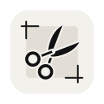
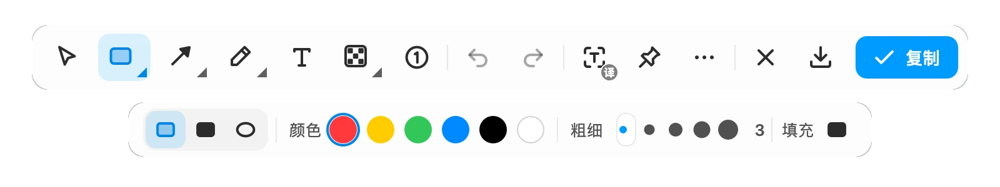
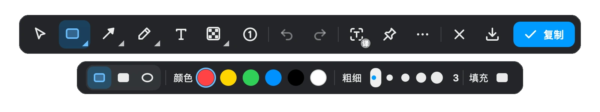
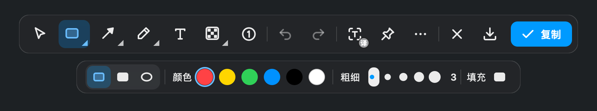
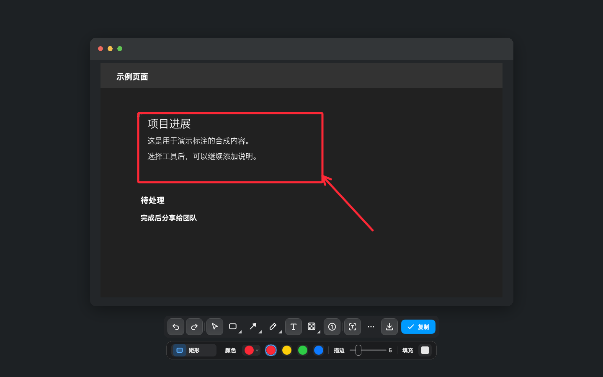
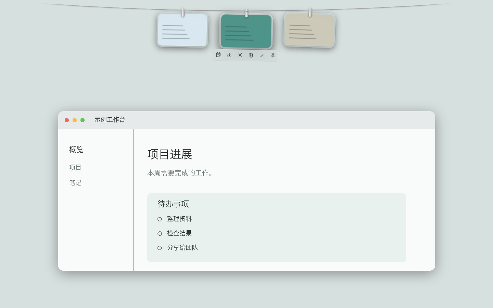
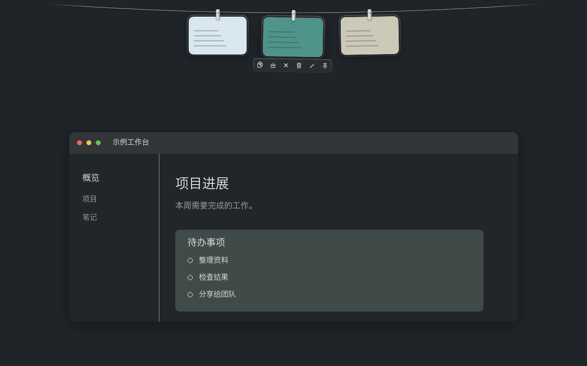
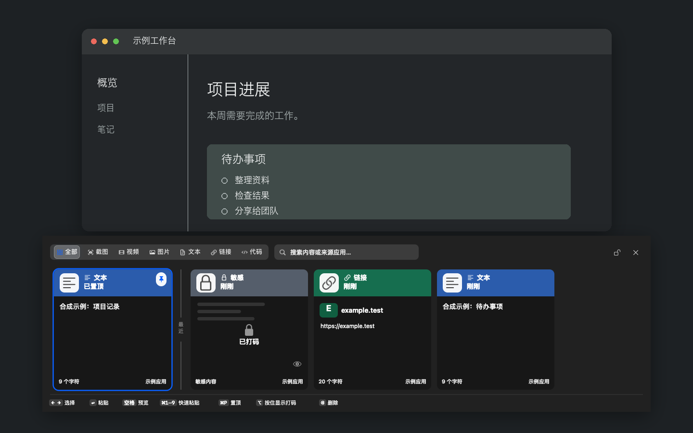

汐痕 LumaTrace
截下关键瞬间，
标清每一个重点
面向日常办公、产品反馈、教程制作和隐私打码：按快捷键框选，直接标注或识别文字，最后复制、保存、贴图，或进入长截图和录屏。
版本 2.24 · macOS 14 及以上 · Apple 芯片 / Intel 通用 · Windows 版 2.19 · Windows 安装包未签名，Windows 可能出现 SmartScreen 提示。
1280 × 720


记录屏幕上的一切
截图、编辑、历史，常用动作都在手边。





推荐上手顺序
- 安装与授权截图和长截图需要屏幕录制权限；历史自动粘贴等功能需要辅助功能权限。
- 截图工作流学会框选、工具栏、快捷键和导出方式，这是最高频的功能。
- 编辑标注文本、箭头、序号、马赛克，以及 Command 拖动选择。
- OCR 与翻译本地 OCR 直接识别；macOS 15 及以上可用系统翻译。
现在就试试汐痕
截图、标注、打码、识别与贴图保存，一条丝滑工作流完成。
Windows 安装包未签名，Windows 可能出现 SmartScreen 提示。